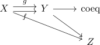

coequalizer in Top
Proposition
Given category Top, topological spaces $X,Y$ and morphisms $f,g: X \rightarrow Y$

the coequalizer in category Top exists and is given by the quotient topology on \mathrm{coeq}(f,g) \cong Y/\sim \end{align*} where $\sim$ is the equivalence relation on the coequalizer in Set, i.e. the equivalence relation generated by $f(x) \sim g(x)$.
Proof
We show the universal property of the coequalizer Suppose we have a diagram

which commutes. then there exists a set theoretic map $p: Y/\sim \rightarrow Z$ given by $[y] \mapsto [h(y)]$. Moreover, it makes the diagram commute: for any $x$ we have $[f(x)] = [g(x)]$ by construction. So it suffices to show that this set-theoretic coequalizer also lifts to the category Top, i.e. show that the projections $X \rightarrow \mathrm{coeq}(f,g)$ and $Y \rightarrow \mathrm{coeq}(f,g)$ are